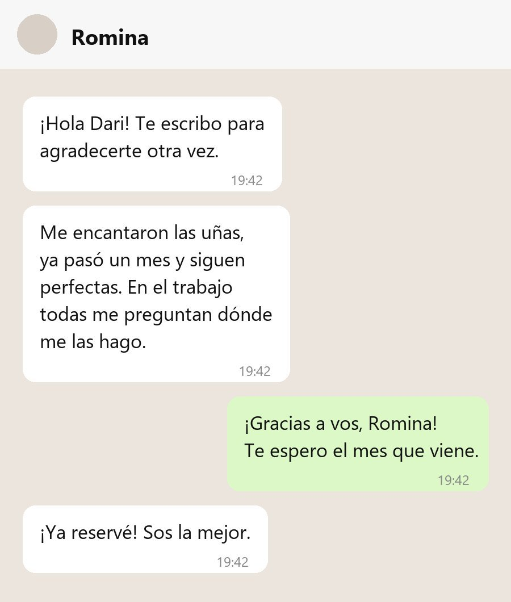

Las uñas más lindas que tuve. ¡Y duran un montón! Fui por primera vez por recomendación de una amiga y no pensaba que la manicura rusa fuera tan distinta. Daria me explicó todo el proceso, trabajó con muchísimo cuidado y no me dolió nada. Ya pasaron cuatro semanas y el esmalte sigue perfecto. Vuelvo sí o sí.Valentina · Kapping en gel · reseña de ejemplo
Forma perfecta, exactamente lo que le pedí.Sofía · Esculpidas · reseña de ejemplo
Daria tiene una paciencia y un pulso increíbles. Le mostré una foto de Pinterest bastante complicada y la hizo todavía más linda. Además el lugar es súper limpio, abre el instrumental esterilizado delante tuyo y eso da mucha tranquilidad.Camila · Nail art · reseña de ejemplo

Romina · por WhatsApp · reseña de ejemploTenía las cutículas muy dañadas y en dos visitas cambiaron por completo. Me encanta lo cuidadosa que es y que todo quede tan prolijo.Lucía · Manicura rusa · reseña de ejemplo
Atención impecable de principio a fin. Puntual, cálida y muy profesional. El resultado dura semanas y se ve natural, justo lo que buscaba. Recomiendo pedir turno con tiempo porque tiene la agenda llena, y con razón.Martina · Kapping + esmaltado · reseña de ejemplo